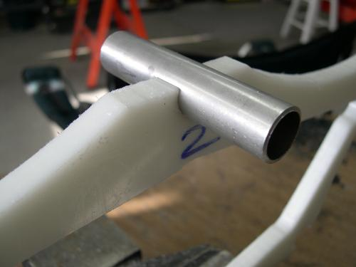
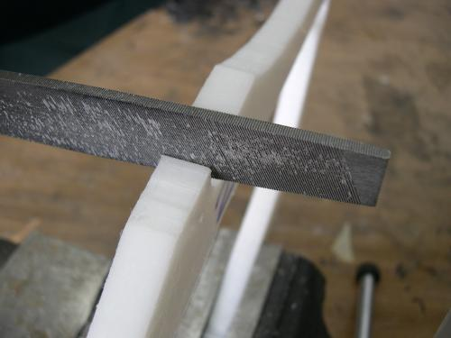

| Cross Sections - Trimming "Snap" Areas | Menu Previous Page Next Page |
|

1. If the tube can be "snapped" onto the cross section, no further fitting is required. If the tube is a close fit, but won't quite snap on, slide it into the cutout and pull up on one side of the tube until it breaks free. Try this a time or two from both sides until the tube snaps on easily. |

2. If the tube won't snap on, carefully file down the edges of the opening, a little at a time, until the tube snaps on.
|